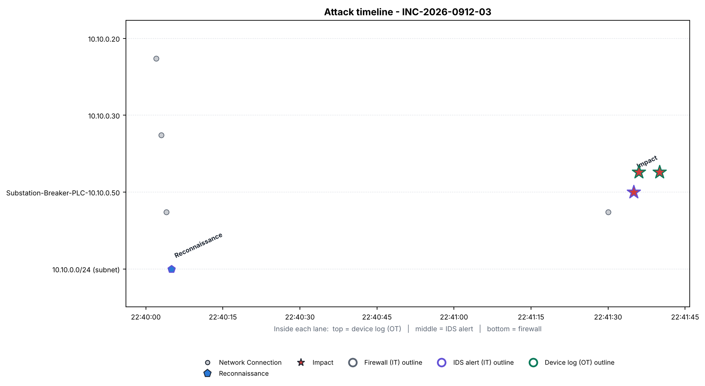
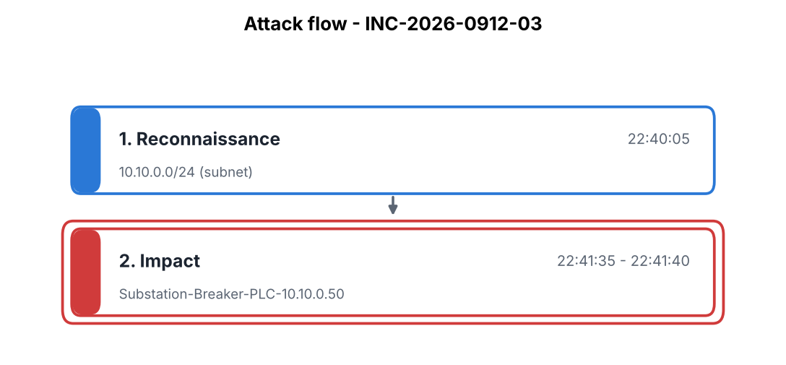
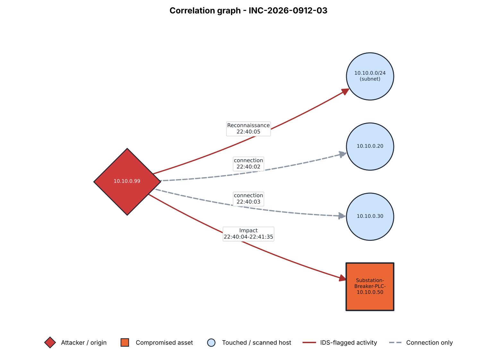

| Time | Stage | Asset | Source | Description |
|---|---|---|---|---|
| 22:40:02 | Network Connection | 10.10.0.20 | firewall | ALLOW TCP 10.10.0.99 -> 10.10.0.20:502 |
| 22:40:03 | Network Connection | 10.10.0.30 | firewall | ALLOW TCP 10.10.0.99 -> 10.10.0.30:502 |
| 22:40:04 | Network Connection | Substation-Breaker-PLC-10.10.0.50 | firewall | ALLOW TCP 10.10.0.99 -> 10.10.0.50:502 |
| 22:40:05 | Reconnaissance | 10.10.0.0/24 (subnet) | ids | ET SCAN Internal Host Sweep on Modbus Port (Reconnaissance) |
| 22:41:30 | Network Connection | Substation-Breaker-PLC-10.10.0.50 | firewall | ALLOW TCP 10.10.0.99 -> 10.10.0.50:502 |
| 22:41:35 | Impact | Substation-Breaker-PLC-10.10.0.50 | ids | ET SCADA Modbus Write Function Code Anomaly - Unauthorized Source (ICS-Attack) |
| 22:41:36 | Impact | Substation-Breaker-PLC-10.10.0.50 | device | [Substation-Breaker-PLC-10.10.0.50] LOGIC_CHANGE by 10.10.0.99: Breaker control logic modified via Modbus write from 10.10.0.99, trip setpoint register altered |
| 22:41:40 | Impact | Substation-Breaker-PLC-10.10.0.50 | device | [Substation-Breaker-PLC-10.10.0.50] STATE_CHANGE by 10.10.0.99: Breaker entered unexpected operational state (output override) - risk of unplanned trip |